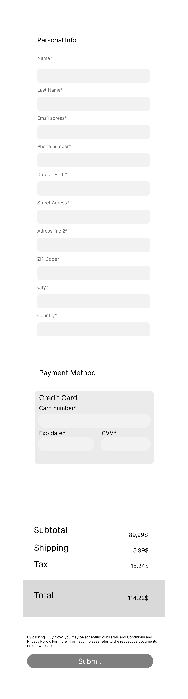
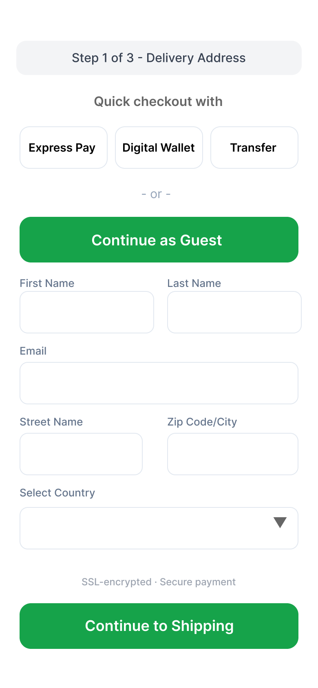

Vom schlechten zum besseren Checkout
In diesem Projekt habe ich einen überladenen, schlecht strukturierten Checkout Prozess analysiert und ein überarbeitetes Design erstellt, bei dem ich versucht habe, jede Änderung auf Forschung zurückzuführen.
Mein Ziel ist es nicht, zu behaupten, dass mein Redesign perfekt ist, sondern vielmehr zu demonstrieren, wie ich bei derartigen Projekten vorgehe. Zunächst analysiere ich die Gründe für die bestehenden Herausforderungen und leite daraus die Änderungen ab, die ich vornehmen würde.
Warum der Checkout Prozess wichtig ist
Checkout Abbrüche sind eines der am besten erforschten Probleme im E-Commerce. Die Zahlen sind bekannt und trotzdem sehen viele Checkouts noch immer so aus wie das Bad Design, das ich hier als Ausgangspunkt genommen habe: zu viele Felder, keine Orientierung, kein Vertrauen.
Ein interessanter Aspekt der Forschung ist, dass es sich beim Checkout weniger um ein technisches als um ein psychologisches Problem handelt. Eine qualitative Studie, die ich bei der Recherche gefunden habe, beschreibt als Hauptabbruchgründe Faktoren wie emotionale Ambivalenz, Entscheidungsmüdigkeit und wahrgenommenes Risiko (Adnan, 2025), also Dinge, die schlechtes Interface Design aktiv verschlimmert.
Was genau macht diesen Checkout so schwer nutzbar, und welche dieser Probleme lassen sich mit begründeten Designänderungen angehen?
Die beiden Designs im Vergleich
Beide Versionen sind in Figma entstanden. Das linke Design zeigt bewusst eingebaute UX Probleme, das rechte den überarbeiteten Stand.


Die Probleme und ihre Grundlage
Ich habe das schlechte Design heuristisch analysiert und die identifizierten Probleme mit aktueller Forschung abgeglichen. Hier sind die wichtigsten Punkte.
Zehn Formularfelder auf einmal
Das Formular enthält zehn Pflichtfelder gleichzeitig, darunter Felder wie Date of Birth und Address Line 2, die für einen Standard Checkout nicht notwendig sind. Forschung zur kognitiven Belastung zeigt, dass zu viele Informationen und komplexe Formulare Nutzer:innen überfordern und zu Fehlern und Abbrüchen führen.
Keine Fortschrittsanzeige
Nutzer:innen wissen nicht, wo sie im Prozess sind oder wie viele Schritte noch folgen. Eine Usability Studie mit 70 Teilnehmenden stellte fest, dass ein Checkout System mit unklarer Informationshierarchie nur einen SUS Score von 69,57 erreichte, was als marginal eingestuft wurde. Nach dem Redesign mit klaren Hierarchien stieg der Score auf 96,64.
Preise tauchen erst am Ende auf
Subtotal, Shipping und Tax erscheinen erst ganz unten, kurz vor dem Submit Button. Forschung zeigt, dass versteckte Zusatzgebühren, die erst spät sichtbar werden, zu den Hauptursachen für Warenkorbabbrüche gehören.
Kein Vertrauenssignal
Es gibt keine Sicherheitshinweise im Bereich der Zahlungseingabe. Eine Studie zu Warenkorbabbrüchen identifiziert wahrgenommenes Risiko und fehlendes Vertrauen als psychologische Hauptfaktoren, die stärker wirken als technische Probleme.
Grauer, unauffälliger Submit Button
Der einzige Call to Action Button hat kaum Kontrast und ist visuell kaum von den Formularfeldern zu unterscheiden. Eine A/B Studie mit 80 Teilnehmenden zeigte, dass ein optimiertes Interface mit klarer visueller Hierarchie zu weniger Klicks und weniger Fehlern führt.
Kein Guest Checkout
Das Design gibt keinen Hinweis darauf, ob man als Gast kaufen kann. Die Forschung zeigt, dass erzwungene Registrierung besonders bei Männern zu erhöhten Abbruchraten führt, aber auch insgesamt als Friction Faktor gilt.
Die Änderungen im Überblick
Für jede Änderung im überarbeiteten Design gibt es eine Begründung. Die folgende Tabelle fasst die wichtigsten zusammen.
| Bad Design | Überarbeitetes Design |
|---|---|
| 10 PflichtfelderInkl. Date of Birth, Phone, Address Line 2 | 6 FelderNur das Nötigste, Name und Nachname in einer Zeile, PLZ und Stadt in einer Zeile |
| Keine FortschrittsanzeigeNutzer:innen wissen nicht wo sie sind | Step 1 of 3Klare Orientierung im Prozess |
| Preise erst am Ende sichtbarÜberraschung kurz vor dem Kauf | Gesamtbetrag im CTA ButtonContinue to Shipping zeigt den Kontext |
| Kein VertrauenssignalBesonders problematisch bei Zahlungsdaten | SSL encrypted · Secure paymentDirekt über dem finalen Button |
| Grauer Submit ButtonKaum sichtbar, kein Kontrast | Grüner Button mit klarer BeschriftungContinue to Shipping, hoher Kontrast |
| Kein Guest CheckoutKeine Alternative zur Registrierung erkennbar | Continue as Guest prominentAls grüner Button direkt über den Feldern |
| Keine SchnellzahlungNur Kreditkarte, manuell eingeben | Express Pay OptionenDrei Buttons für schnellere Zahlungswege |
Grenzen dieses Projekts
Eine ehrliche Einschätzung
Dieses Projekt ist eine heuristische Analyse und ein Designvorschlag, kein getestetes Redesign. Ich habe keine Nutzer:innen auf die Prototypen losgelassen und keine Conversion Daten. Die Zahlen aus der Forschung, die ich nenne, kommen aus anderen Kontexten und lassen sich nicht direkt übertragen.
Was ich zeigen wollte ist, dass ich eine strukturierte Herangehensweise habe, bei der Designentscheidungen begründet und nicht nur nach Gefühl getroffen werden.